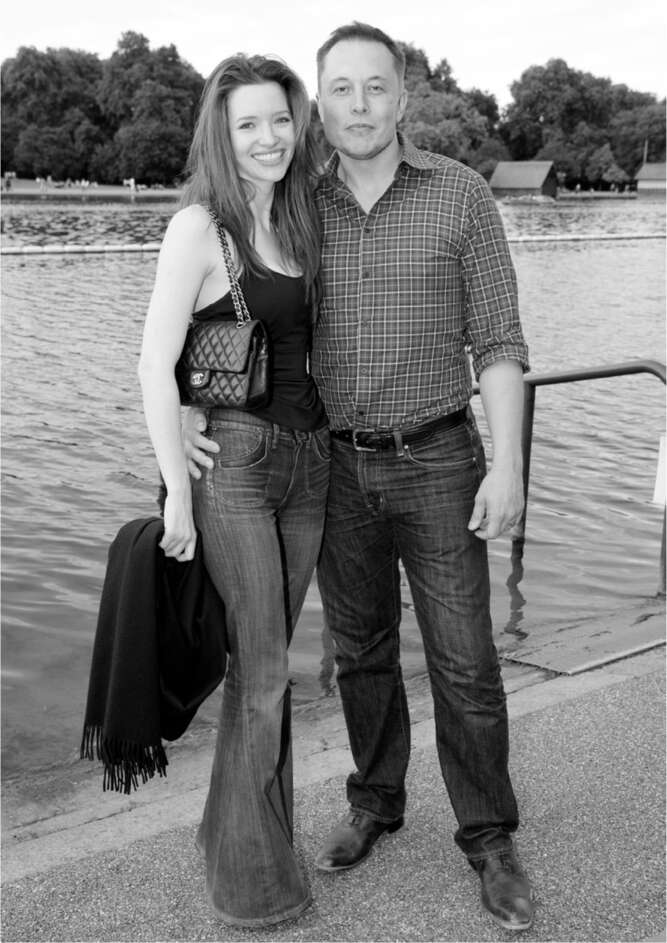

Tháng 7 năm 2008, sau khi chia tay Justine, Musk dự kiến có bài phát biểu trước Hiệp hội Hàng không Hoàng gia ở London. Đó không phải là thời điểm thích hợp để nói về tên lửa. Hai quả tên lửa của anh đã phát nổ, và lần thử thứ ba dự kiến sẽ phóng trong ba tuần nữa. Chuỗi sản xuất lộn xộn của Tesla đang ngốn tiền mặt, và những dấu hiệu ban đầu của một cuộc khủng hoảng kinh tế toàn cầu khiến việc huy động vốn mới trở nên khó khăn. Thêm vào đó, những tranh chấp ly hôn với Justine đe dọa khả năng kiểm soát cổ phiếu Tesla của anh. Tuy nhiên, anh vẫn đến.
Trong bài phát biểu, anh lập luận rằng các dự án không gian thương mại, chẳng hạn như SpaceX, có tính đổi mới hơn các chương trình của chính phủ và là điều cần thiết nếu con người muốn định cư trên các hành tinh khác. Sau đó, anh đến thăm Giám đốc điều hành của Aston Martin, người đã chỉ ra những hạn chế của xe điện và bác bỏ những lo ngại về biến đổi khí hậu.
Ngày hôm sau, Musk thức dậy với cơn đau dạ dày, điều này không có gì bất thường. Anh có thể giả vờ thích căng thẳng, nhưng dạ dày của anh thì không. Anh đang đi cùng người bạn Bill Lee, một doanh nhân thành đạt, người đã đưa anh đến một phòng khám. Khi bác sĩ xác định rằng anh không bị viêm ruột thừa hay bất cứ điều gì tồi tệ hơn, Lee nhất quyết rằng họ phải đi xả hơi, và anh gọi cho một người bạn, Nick House, chủ sở hữu câu lạc bộ đêm sôi động Whisky Mist. “Tôi đã cố gắng kéo Elon ra khỏi tâm trạng của anh ấy,” Lee nói. Musk liên tục cố gắng rời đi, nhưng House đã thuyết phục họ đến một phòng VIP ở tầng hầm. Vài phút sau, một nữ diễn viên mặc chiếc váy dạ hội bắt mắt bước vào.
Talulah Riley, khi đó 22 tuổi, lớn lên trong một ngôi làng đẹp như tranh vẽ ở Hertfordshire, Anh, và khi gặp Musk, cô đã tạo dựng được tên tuổi trong một số vai diễn nhỏ nhưng được đánh giá cao, đáng chú ý nhất là vai Mary, cô em gái Bennet không có năng khiếu âm nhạc, trong một phiên bản chuyển thể của tác phẩm Kiêu hãnh và Định kiến của Jane Austen. Cao và xinh đẹp với mái tóc dài buông xõa, cùng với trí óc và tính cách sắc sảo, cô hoàn toàn là mẫu người của Musk.
Được Nick House và một người bạn khác, James Fabricant, giới thiệu, cô ngồi cùng Musk. “Anh ấy có vẻ khá nhút nhát và hơi vụng về,” cô nói. “Anh ấy đang nói về tên lửa, và lúc đầu tôi không nhận ra đó là tên lửa của anh ấy.” Có lúc anh hỏi: “Anh có thể đặt tay lên đầu gối em được không?” Cô hơi bất ngờ, nhưng gật đầu đồng ý. Cuối cùng, anh nói với cô: “Anh rất tệ trong việc này, nhưng em có thể cho anh số điện thoại của em được không vì anh muốn gặp lại em.”
Riley vừa dọn ra khỏi nhà bố mẹ và sáng hôm sau cô gọi điện kể về người đàn ông mình vừa gặp. Trong lúc trò chuyện, bố cô đã tra Google. "Người này đã có vợ và năm con rồi," ông nói. "Con bị gã sở khanh nào đó lừa rồi." Tức giận, cô gọi cho Fabricant, người bạn đã trấn an cô và khẳng định rằng Musk đã chia tay vợ.
"Cuối cùng chúng tôi đã ăn sáng cùng nhau," Riley kể, "và lúc kết thúc, anh ấy nói, 'Anh rất muốn gặp em vào bữa trưa.' Rồi sau bữa trưa hôm đó, anh ấy lại nói, 'Thật tuyệt vời. Giờ anh muốn gặp em vào bữa tối.'" Trong ba ngày tiếp theo, họ dùng gần như mọi bữa ăn cùng nhau và đi mua sắm ở cửa hàng đồ chơi Hamleys để mua quà cho năm đứa con của anh. "Họ cứ như chim câu, tay trong tay suốt," Lee nói. Cuối chuyến đi, anh mời cô bay về Los Angeles cùng mình. Cô không thể vì phải đến Sicily chụp ảnh cho bài báo trên Tatler về bộ phim cô vừa đóng, St. Trinian’s. Nhưng từ đó, cô đã bay đến Los Angeles.
Thay vì dọn về ở cùng Musk—điều mà cô cho là không nên—cô đã thuê phòng một tuần tại khách sạn Peninsula. Cuối chuyến thăm, anh cầu hôn. "Anh rất tiếc là không có nhẫn," anh nói. Cô đề nghị họ bắt tay làm bằng chứng, và họ đã làm vậy. "Tôi nhớ mình đã bơi cùng anh ấy trong hồ bơi trên sân thượng, rất vui giddiness, nói về việc thật kỳ lạ khi chúng tôi mới quen nhau khoảng hai tuần mà giờ đã đính hôn." Riley nói cô cảm thấy chắc chắn mọi chuyện sẽ ổn. "Chuyện tồi tệ nhất có thể xảy ra với chúng ta là gì?", cô nói đùa. Musk, đột nhiên nghiêm túc, đáp, "Một trong hai chúng ta có thể chết." Lúc đó, không hiểu sao cô lại thấy điều đó rất lãng mạn.
Khi bố mẹ cô bay từ London đến gặp Musk vài tuần sau đó, anh đã hỏi bố cô liệu anh có thể cưới cô không. "Bố biết con gái mình rất rõ, và bố tin tưởng vào sự lựa chọn của con, vậy nên cứ tiến hành đi," ông trả lời. Maye bay đến Los Angeles và, lần đầu tiên, bà ủng hộ một trong những người bạn đời của con trai mình. "Cô ấy thật sự rất đáng yêu, hài hước, tình cảm và thành đạt," bà nói. "Và bố mẹ cô ấy rất tốt, một cặp vợ chồng người Anh thực sự tuyệt vời." Nhưng theo lời khuyên của Kimbal, em trai mình, anh quyết định, và Talulah cũng đồng ý, rằng họ nên đợi thêm vài năm nữa mới kết hôn.

Cùng Talulah Riley tại Hyde Park, London